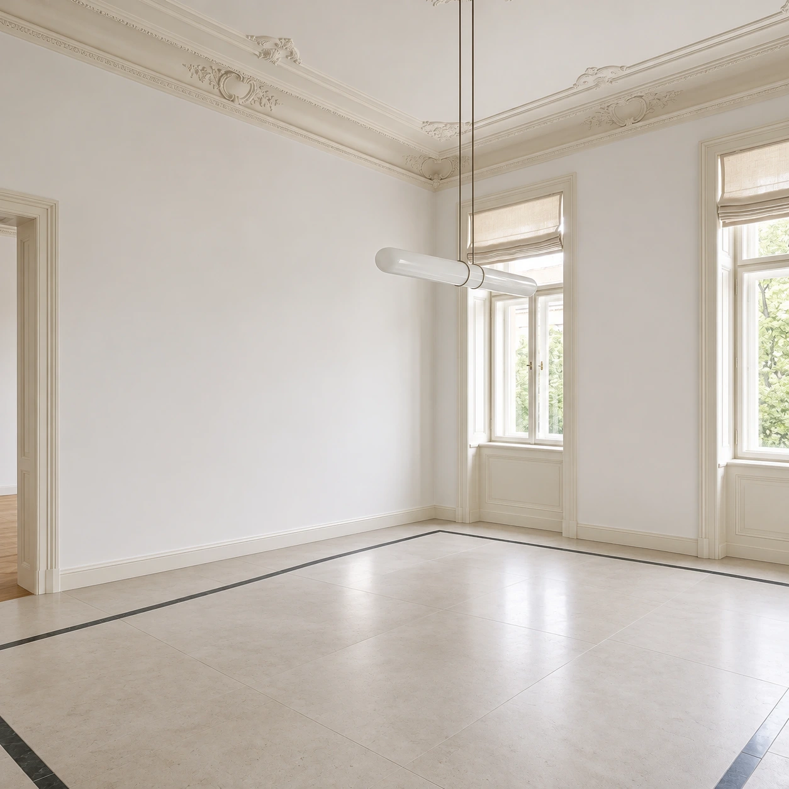
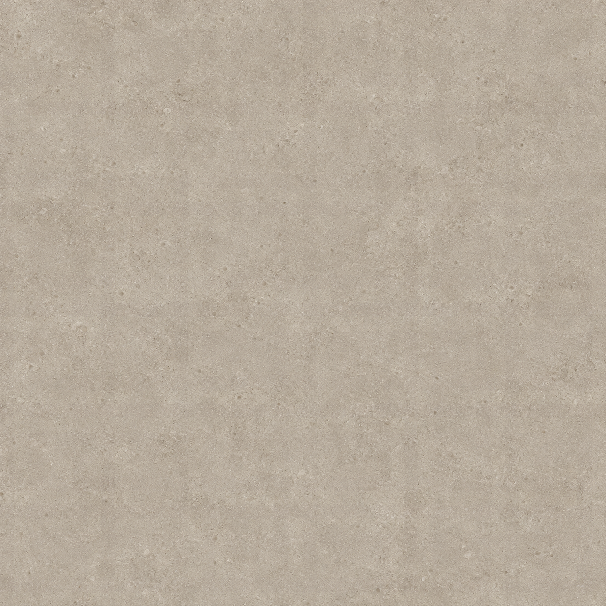
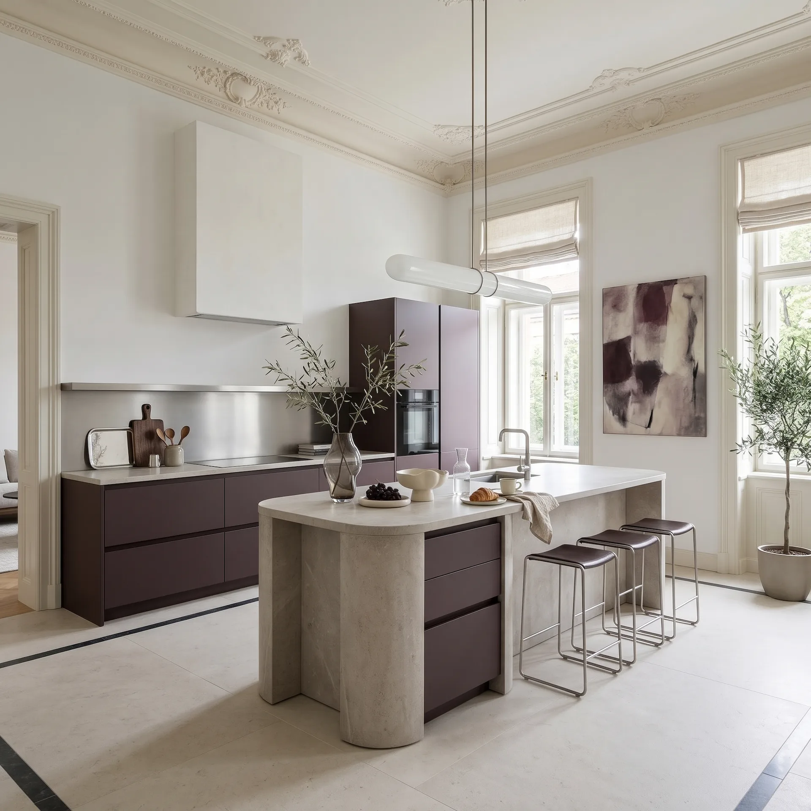

Žižkov Kitchen
A considered kitchen with space to cook and gather.


Practical details, brought together in one clear composition.
The starting point is how people move through the room: preparing food, sharing a meal and moving between the kitchen and the living space.
Storage and work surfaces are planned together with lighting and appliance integration. Material choices are developed through samples and a detailed proposal.
- Space
- Kitchens
- Location
- Praha · Žižkov
- Made to measure
- Design · Craft · Installation
Materials & finishes
Surface samples and fittings taken directly from this project’s photograph. Colours reflect the image’s lighting; exact material specifications are confirmed separately.
Finishes · photographic samples
Muted plum fronts
Smooth cabinetry finish without opening gaps

Pale stone surface
Similar stone texture · illustrative material sample
Metal backsplash
Reflective silver-grey finish behind the worktop
Sink & mixer finish
Neutral metal tone from the kitchen fittings
Colour palette · sampled from the image
Fixtures & fittings · photo details
Sink mixer
Photographic detail of the mixer
Drawer reveals
Fine opening lines between the flat fronts
Integrated oven
The built-in appliance in the tall cabinet
Linear pendant
The light fitting above the island
Considered details
Explore the surfaces, junctions and small decisions that shape the finished piece.

Island edge
Pale surface wrapping the curved corner
Drawer fronts
Muted plum and fine horizontal reveals
Backsplash junction
Brushed surface meeting the worktop